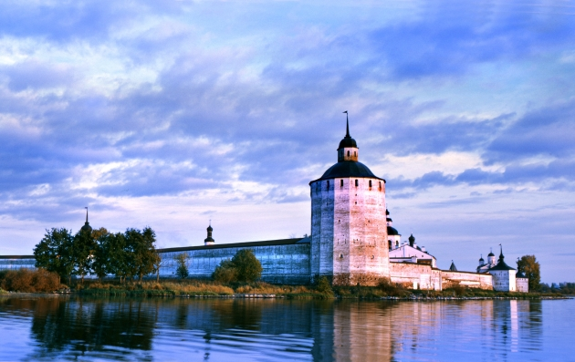
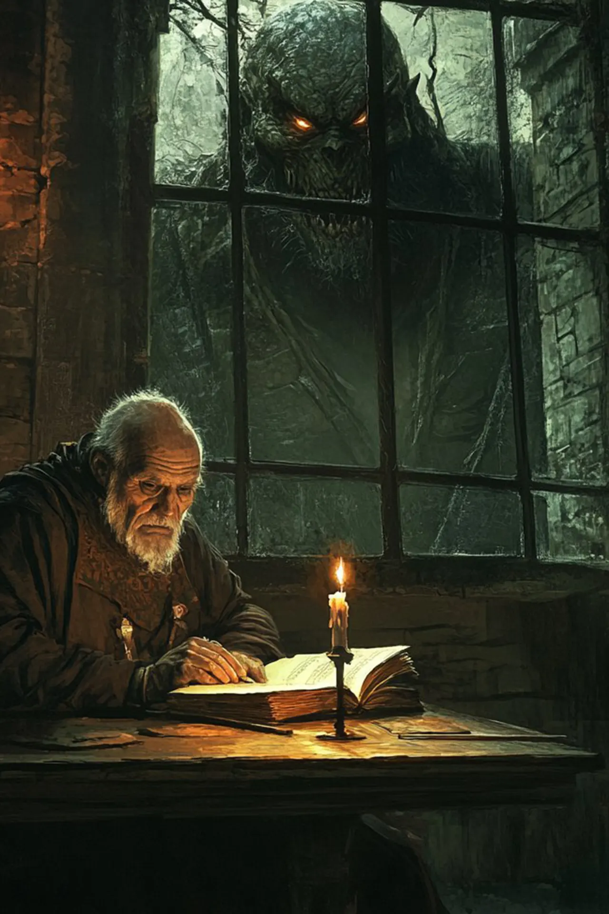

Записки старца Питирима
В пыльных глубинах библиотеки Кирилло-Белозерского монастыря найдены записи старца Питирима,летописца и собирателя преданий XVI века. Много лет он странствовал по Руси, от дремучих лесов до ледяных берегов Белого моря, записывая в свой дневник рассказы о нечистой силе, демонах и древних чудовищах, что таятся на краю цивилизации.

Житие Питирима:Родился Питирим в середине XV века в семье священника в небольшом селе под Новгородом. С юных лет он проявлял интерес к
чтению и письму, и в 12 лет был отдан на обучение в Соловецкий монастырь. Там он провел 20 лет, изучая Священное
Писание, жития святых, но также и древние легенды, сказания о богатырях и чудесах, которые будоражили его воображение.
Когда весть о начитанном и умелом писце дошла до великого князя Василия III, тот призвал Питирима ко двору, где старец
служил летописцем. Но мирская жизнь тяготила монаха, и вскоре он испросил позволения отправиться в странствие по Руси,
чтобы увидеть своими глазами то, о чем читал в древних книгах. Так начались его долгие странствия и сбор жутких
историй...
"Проклятье Беломорья"
...(прежний текст о путешествии на Белое море, описании "упырей" и защитных ритуалах)...
... Уже отходя ко сну у костра, я ощутил леденящий взгляд, пронзающий меня сквозь можжевеловый дым. От берега доносил
шепот волн, похожий на стоны, а сквозь него я различал плеск, медленный и тяжелый, словно нечто огромное двигалось к
берегу.
Страх сковал мои члены. Местные, словно чуя неладное, начали бормотать молитвы, крепче сжимая обереги. Внезапно лай
собак перешелв сплошной вой, и из-за скал показалась фигура. Бледная, как луна, с длинными, как водоросли, волосами,
она медленно приближалась. В ее черных глазах горел голод, а на губах блестела темная, словно запекшаяся кровь...
Питирим пишет о путешествии на побережье Белого моря, где местные жители трепещут перед "упырями морскими".
Он описывает их как бледных мертвецов с черными глазами, чьи тела покрыты водорослями и ракушками.Кирилло-Белозерский монастырь

Они выходят на берег по ночам, чтобы пить кровь выброшенных на берег китов, а иногда нападают и на людей.
Питирим рассказывает о ритуалах, которыми пытаются защититься от "упырей", — костры из можжевельника, обереги из рыбьих костей, особые заговоры.
В конце он намекает, что сам столкнулся с этими тварями. Питирим с содроганием вспоминал рассказы поморов о бледных, словно выбеленные солью, тварях с горящими глазами, которые
крались за рыбацкими лодками в тумане. Он сам видел следы их когтей на прибрежных камнях — глубокие борозды, словно от
медвежьих лап, только куда больше и страшнее.
После той поездки Питирим не мог оставаться на месте. Он побывал во многих уголках Руси, от дремучих лесов Заволжья, где
поклоняются древним богам, до холодных земель за Уральскими горами. Там, среди бескрайней тайги, он впервые записал
сказания о Чуди белоглазой, народе, что ушел жить под землю, спасаясь от нашествия врагов. Питирим утверждал, что даже
вел беседу с их царем — мудрым старцем по имени Индрик, который поведал ему тайны загробного мира и предупредил о
грядущих бедах.
Но вернувшись в Москву, Питирим столкнулся с тем, что его рассказы о неведомом, о чудовищах и древних народах, встречали
лишь насмешки. Бояре, привыкшие верить лишь звону монет и шелесту парчи, крутили пальцем у виска, а монахи в кельях
осуждающе качали головами, обвиняя Питирима в ереси и лжесвидетельстве.
Разочарованный и измученный, Питирим удалился в Кирилло-Белозерский монастырь, где и провел остаток своих дней,
переписывая древние летописи и пытаясь разобраться в увиденном и услышанном. Его записи, полные жутких образов и
невероятных историй, долгое время пылились в монастырской библиотеке, пока не попали к нам в руки...
Питирим за работой
Комментарии
Пользователь 1 1 час назад
Вречатляющая история.